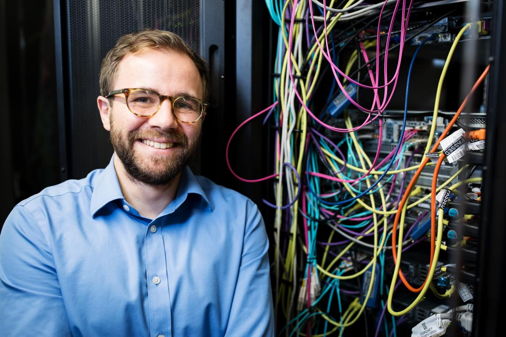

Home

My main research interest is around joint analysis of genetic and clinical imaging data.
This stems from my PhD where I looked at genetic correlation with flow cytometry data in type 1 diabetes.
My current project Eye2Gene aims to assist the molecular diagnosis and improve communication of findings for inherited retinal diseases.
A lot of my work revolves around image analysis, ontologies, next generation sequencing analysis methods, genomics pipelines, databases and web services.
Since my computer science undergrad, I have a long standing interest in machine learning and improving our quality of life through automation.
I believe in open science, citizen science and sharing of know-how and ideas for the betterment of the human condition.
In that spirit I am part of the MyEyeSite project to empower patients with their health data and have donated my genetic information to the Personal Genome Project UK, a citizen science initiative, helping people learn and understand about genetics!